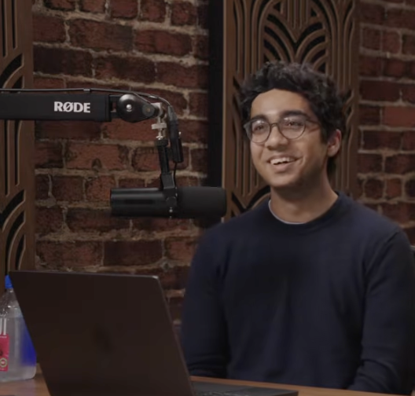

I'm a sophomore studying CS/Math at Stanford. I grew up in India, Azerbaijan, Dubai, and Texas.
I value human connection, which has inspired a lot of my work across deep learning, autonomy, public policy, venture capital, and healthcare. I enjoy animating the inanimate (Gödel Escher Bach). At the heart of my work, I care about building meaningful tools to better humanity.
Previously: Youngest AI intern at General Motors/Cruise (ADAS Team in MTV), where I trained VLAs for self-driving and published deep learning for drug discovery research (ACM, BROAD, ISEF). Currently, I'm researching how to improve the abilities of robotic systems to perceive, reason, and act using VLAs and LLMs. Incoming first undergrad researcher at Applied Intuition's research team.
I co-host the STARTS (STEM+Arts) podcast (guests include Dwarkesh, Thomas Wolf, etc.), where I challenge the conventional norm through thought-provoking interdisciplinary conversations. I am also fortunate enough to be a VC fellow at NFX. In my free-time, I can be seen relishing a cup of coffee while coding or reading, playing with my Labrador-Saluki-Akita Buster, and at the gym.